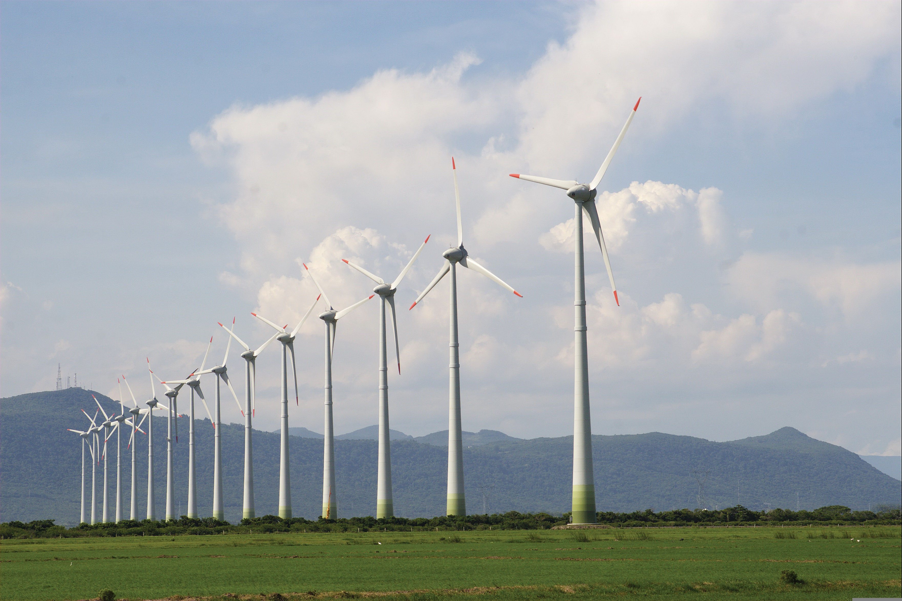

A geotermikus energia a föld hőjének energiáját használja fel energia kitermelésére! A alap működése igen hasonlít az atomenergia kitermelésének módjára. A föld hőjével vizet forralunk és turbinákat forgatunk!
A geotermikus erőművek a Föld belső hőjét használják fel villamos energia előállítására. A geotermikus energia a Föld belsejében zajló radioaktív bomlási folyamatok és a bolygó eredeti formálódásából származó hő következménye, amely a földkéreg alatt halmozódik fel.
A geotermikus erőművek olyan helyeken épülnek, ahol a földkéreg vékonyabb, vagy ahol a földalatti hő közelebb van a felszínhez (például vulkanikusan aktív területeken). Ilyen helyeken mély kutakat fúrnak a földkéregbe – akár több kilométer mélyre is –, hogy elérjék a forró víz- vagy gőzrétegeket. Ezek a rétegek természetesen előforduló geotermikus tározók.
A fúrásból feltörő forró víz vagy gőz szolgáltatja az energiát a turbinák meghajtásához. A működés három fő típusa létezik:

Miután a gőz elvégezte a munkát a turbinában, kondenzálják, és a lehűlt vizet visszasajtolják a földbe. Ez egyrészt fenntarthatóvá teszi a rendszert, másrészt megakadályozza a nyomás csökkenését a geotermikus tározóban.
A geotermikus energia környezetbarát, mivel alacsony szén-dioxid-kibocsátással jár, és folyamatosan rendelkezésre áll, nem függ az időjárástól. Ugyanakkor a telepítése drága, és csak bizonyos földrajzi helyeken (pl. Izland, Kalifornia, Olaszország, Fülöp-szigetek) gazdaságos.Szükséged lenne egy ábrára is a működésről?
Magyarország annak ellenére hogy nagyon gazdag geotermikus energiában nem igazán fektetnek energiát a felhasználásába!